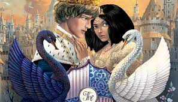

One True King (2020)
The book still follows Agatha and Sophie in ther adventures but now it focuses on their challenges in handling their domain and kingdom together with their charming princes.

Why do I love this book? Because:
Maybe the most important aspect of this book that appealed to me so much is the gradual but evident transition of Tedros from a bitter yet open boy into a principled and responsible man. I loved how he eventually understood that Agatha's actions were only meant to protect him. He was still the prideful boy who was irrevocably in love with Agatha. The only difference this time is that he now knows how to express those tremendous feelings while still prioritizing the wellness of his kingdom.
I loved the improvement between the relationship dynamic of Tedros and Agatha. Despite their frequent mishaps, I really appreciated the way they still hold each other dearly and helped one another to improve for the better. They didn't tolerate the bad attitudes of their other half, but instead addressed their issues with great maturity.
Of course, I adored and absolutely worshiped the plot. It gave me a whole lot of perspective regarding the real meanings of good and bad. People can change for the better (and for worse) if only they allow it.
Go Back